Location department files · The X-Files, Los Angeles era (1998–2002)
The Royer Scout Folders
Fourteen manila location-scout folders, scanned by Jeremy Royer (@unknownparish), with what each one turned out to be. The seller got them from the person who did set location work for the show and many others, which is why a few belong to other productions. Locations are confirmed from readable signage and architecture; episodes only where a frame or a note in the folder proves it.
14folders
91scanned pages
11locations pinned to an address or site
1episode confirmed on the evidence
Confirmed readable in the scan or matched to a frameInferred best fit, not provenUnknown nothing to go onLibrary from another production in the same files
The one with proof
Only one folder ties itself to an episode without any guessing.
LocationConfirmedEpisodeConfirmed"Closure" (S7E11, shot Jan 2000)
A gate-by-gate survey of the closed base — about 60 prints. A yellow Post-it on the Gate 5 flight-line panorama reads "THIS GATE ⇒": that's the fence Mulder stands at looking into "April Air Force Base." The last page pairs the scout print with the frame. Bare trees and low sun agree with a January scout.
Scene scouts
Handwritten labels are scene slugs or street names. The place is certain; the episode is not, unless marked.
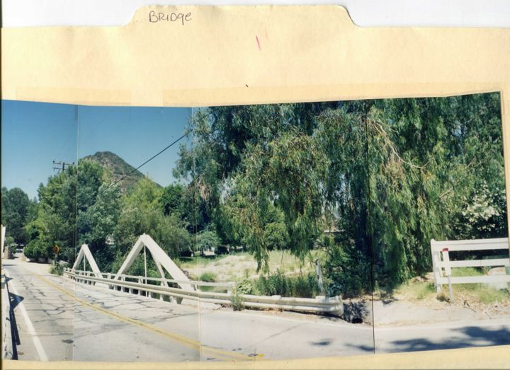
Folder 04 · 2 pages
BRIDGE
Malibou Lake entrance bridge, Lake Vista Dr at Mulholland Hwy, Agoura Hills
LocationConfirmedEpisodeUnknown
The stone gate posts at the far end read "Malibou Lake." The obvious candidate — the car-off-a-bridge teaser of "Nothing Important Happened Today" — was checked against the episode and ruled out: that bridge is a harbor lift span, not this one.
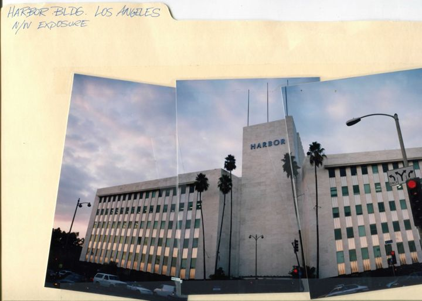
Folder 03 · 2 pages
HARBOR BLDG. LOS ANGELES · N/W exposure
Harbor (Tidewater Oil) Building, 4201 Wilshire Blvd at Crenshaw
LocationConfirmedEpisodeUnknown
Claud Beelman, 1958; an LA Historic-Cultural Monument, still standing. No X-Files credit exists for the address in any public database — possibly scouted and not used.
Standing sets on a rental soundstage (facility not traced)
LocationInferredEpisodeUnknown
The stage ceiling is visible above the courtroom walls — these are sets, not a courthouse. "Redrum," the one LA-era story built around a courtroom, was checked against the episode and ruled out: its arraignment is in a real courtroom with tall arched windows.
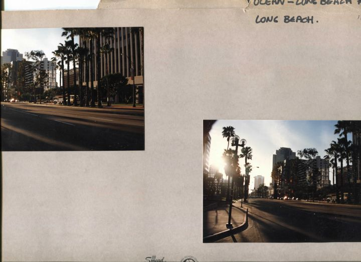
Folder 06 · 6 pages
OCEAN – LONG BEACH · #3 P.M.
Ocean Blvd between Pine Ave and Locust Ave, downtown Long Beach
LocationConfirmedEpisodeUnknown
Renaissance hotel sign, "211 E. Ocean," The Breakers, and the Locust / Pine Square street signs are all readable. Two close-ups of a car hood and mirror with the street soft behind are camera-mount tests — a scout for a daytime driving shot, timed to the light.
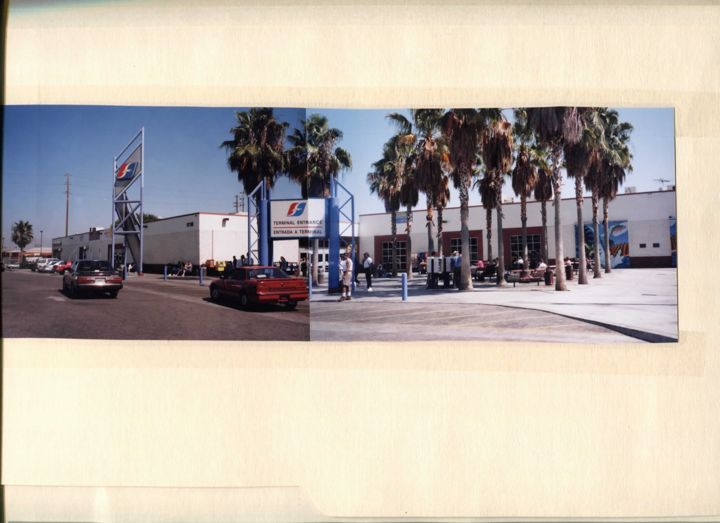
Folder 12 · 5 pages
GREY HOUND BUS TERMINAL – DOWNTOWN
Greyhound Los Angeles terminal, 1716 E. 7th St at Alameda
LocationConfirmedEpisodeUnknown
The "1716" on the wall is the address. The station closed in 2023.
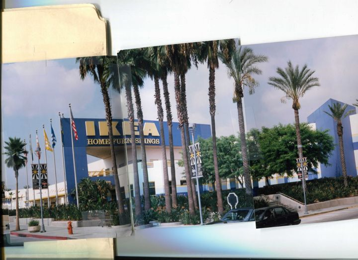
Folder 14 · 16 pages
MEDIA CENTER BURBANK CA · Noon
Downtown Burbank — Media City Center (now Burbank Town Center), IKEA, San Fernando Blvd & First St
LocationConfirmedEpisodeUnknown
About 40 prints of the shopping district in hard midday light; "Noon" on the tab is a light note, like Long Beach's "3 P.M."
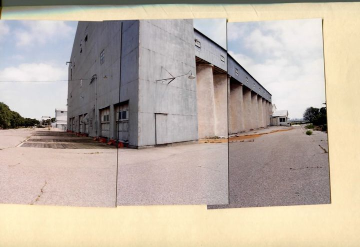
Folder 01 · 3 pages (+1 duplicate in folder 11)
WEARHOUSE (sic)
Unidentified agricultural warehouse or grain-and-bean elevator, probably Ventura County
LocationUnknownEpisodeUnknown
Orchard trees, cracked lot, flat farmland with low hills. Reverse image search found nothing; the building may be gone. This is the one to crowdsource.
Stage surveys, summer 1998
Three rental lots photographed gate-first — guard shacks, main drives, offices — which is how you look at a lot when you're deciding where to base a show. That's exactly what The X-Files was doing the summer it moved from Vancouver. It ended up at Fox; these are the roads not taken.
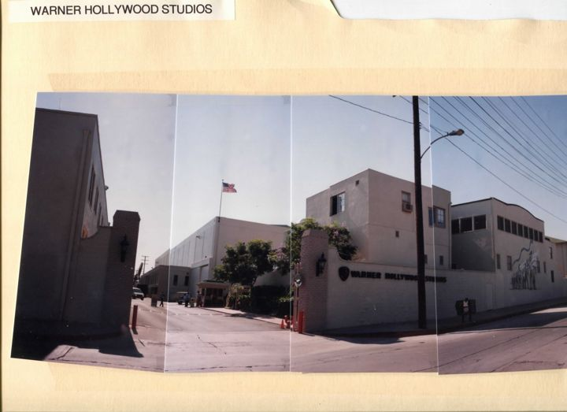
Folder 05 · 2 pages
WARNER HOLLYWOOD STUDIOS · typed
The Lot at Formosa, 1041 N. Formosa Ave, West Hollywood
LocationConfirmedDatedbefore the 1999 sale and rename to "The Lot"; crape myrtle in bloom = summer
The old Pickford-Fairbanks / Goldwyn lot. The sign on the wall dates the visit.
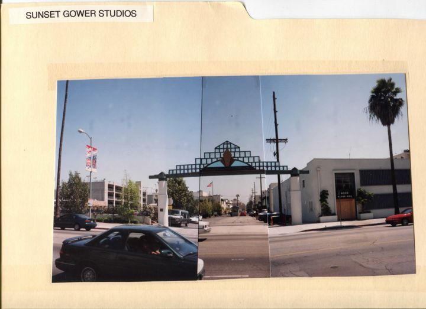
Folder 07 · 2 pages
SUNSET GOWER STUDIOS · typed
Sunset Gower Studios, 1438 N. Gower St, Hollywood
LocationConfirmed
The old Columbia lot; Ocean Way Recording is in frame across the street. Same gate-and-guard-shack coverage as Warner Hollywood.
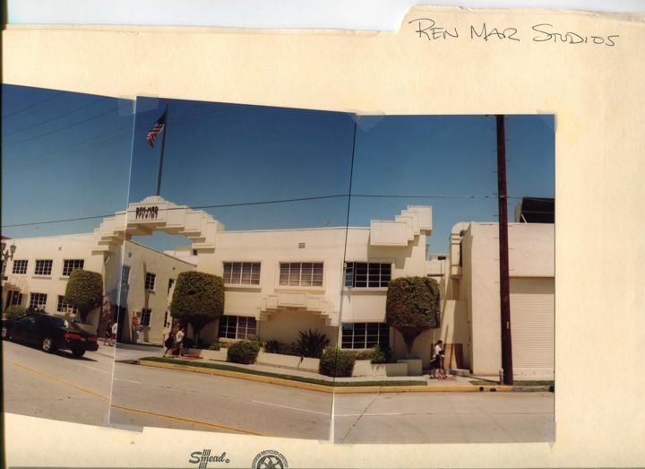
Folder 08 · 13 pages
REN MAR STUDIOS
Ren-Mar Studios, 846 N. Cahuenga Blvd, Hollywood (now Red Studios)
LocationConfirmed
The thorough one: about 30 prints including office suites, dressing rooms, and a dressing-room bath. Whoever shot this was picturing their cast using it. The old Desilu lot.
Probably from the location library, not the show
The seller got these from, in their words, "the person who did set location work for the show and many others." These are the many others: no scene label, no frame, or a date outside the show’s LA years.
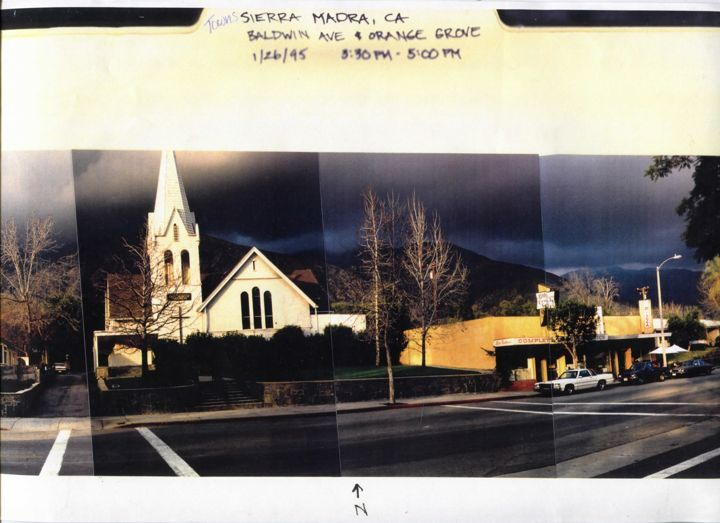
Folder 10 · 8 pages
SIERRA MADRE · one tab: "Towns: Sierra Madra, CA · Baldwin Ave & Orange Grove · 1/26/95 · 3:30–5:00 PM"
Downtown Sierra Madre — Old North Church, Baldwin Ave storefronts, a hair salon interior
LocationConfirmedX-Files?Library
The tab is dated January 1995 — the show was in Vancouver. Unless that "5" is a "9," this folder came from another Fox production. Includes a blank Twentieth Century Fox Television parking-license form (rev. 03/03/95).
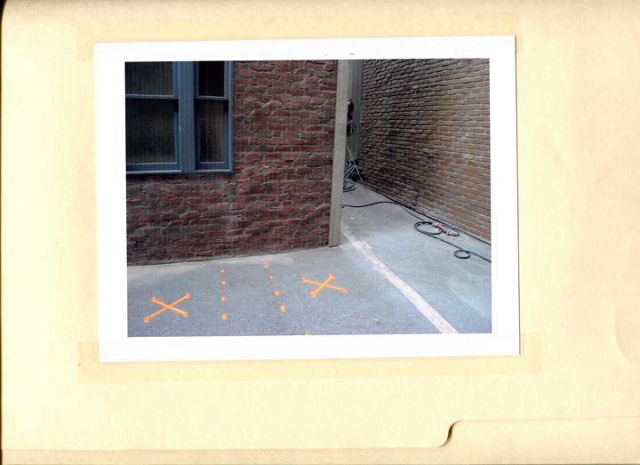
Folder 11 · 5 pages
(unlabeled)
A studio backlot alley set, dressed and lit — plus a second copy of the Warehouse panorama
LocationInferredX-Files?Library
Thin brick façade panels, taped floor marks, a lamp on a stand, a "New York Street" through the arch. Which lot isn't readable from the frames.
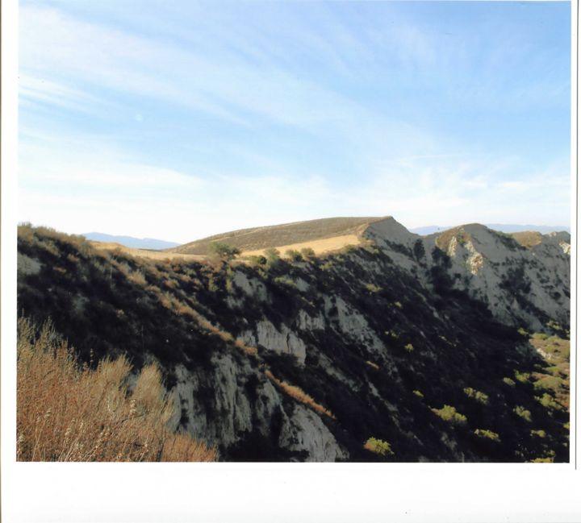
Folder 13 · 3 pages
(unlabeled 2)
Southern California ranch country — Simi Hills / Ventura County type terrain
LocationUnknownX-Files?Library
Not Arizona: dry grass, chaparral and pale sandstone, not saguaro and red rock. Doesn't support the "Within/Without" idea. No signage or structure to pin a ranch.
Two things that would move folders from "inferred" to "confirmed"
A name. Does the seller or estate know whose files these were? A location-manager credit settles which productions the library spans.
Any LA-era call sheet. The two you have are Vancouver seasons. A call sheet from 1998–2002 lists every location with its address for that day.